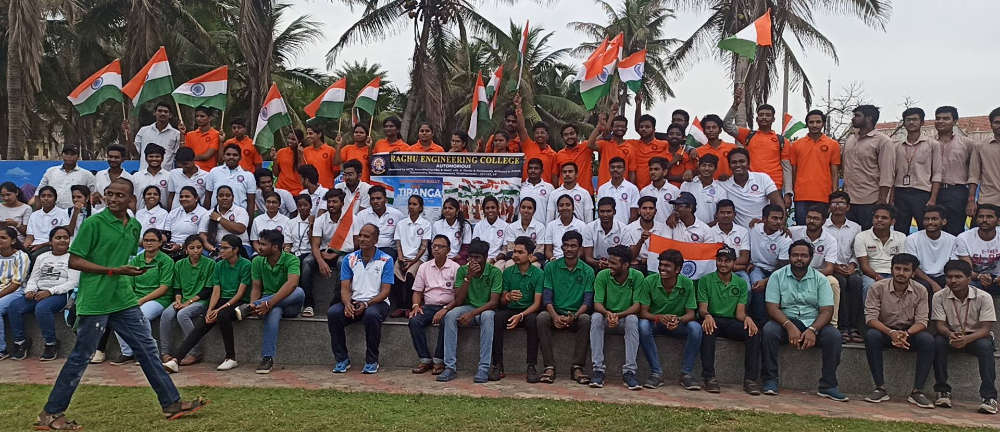
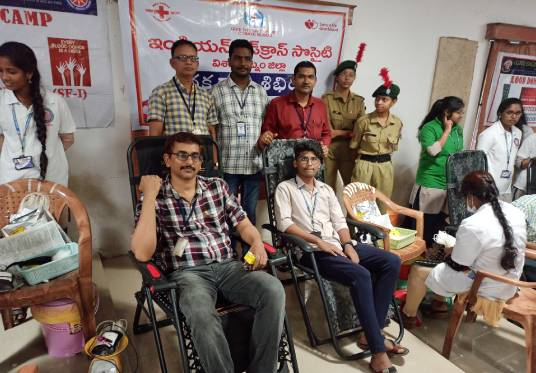

WELCOME TO NSS @ REC
In keeping with the sole aim of the NSS, Raghu Engineering College is associated with National Service Scheme to provide hands on experience to young students in delivering community service. Instilling the spirit of service and promoting active participation in the government led community service activities; Raghu Engineering College has created opportunity for our students to become NSS Volunteers.
Helping students expand out of intellectual luxury and inspired from the thoughts of Mahatma Gandhi of involving students in service activities, Raghu Engineering College has been associated with NSS from 2009. Since its inception with a team of 1 Program Officer and 50 Student Volunteers the unit has been actively rendering services in coordination with JNTUK NSS Cell and has grown to the size of 3 units with each unit constituting of 1 Program Officer and 100 student volunteers adding up to 300 Student Volunteers. Of the 3 units of NSS, one is funded by JNTUK NSS Cell and the rest 2 are self-financed by Raghu Engineering College. The cardinal principle of the programme is that it is organized by the students themselves and because of their active participation in social service they get a sense of involvement in the tasks of national development. This has been helping our students identify social problems and developing a sense of civic responsibility.

The National Service Scheme (NSS) is a Central Sector Scheme of Government of India, Ministry of Youth Affairs & Sports. It provides opportunity to the student youth of 11th & 12th Class of schools at +2 Board level and student youth of Technical Institution, Graduate & Post Graduate at colleges and University level of India to take part in various government led community service activities & programmes.The sole aim of the NSS is to provide hands on experience to young students in delivering community service. Since inception of the NSS in the year 1969, the number of students strength increased from 40,000 to over 3.8 million up to the end of March 2018 students in various universities, colleges and Institutions of higher learning have volunteered to take part in various community service programmes.
The NSS Badge Proud to Serve the Nation: All the youth volunteers who opt to serve the nation through the NSS led community service wear the NSS badge with pride and a sense of responsibility towards helping needy. The Konark wheel in the NSS badge having 8 bars signifies the 24 hours of a the day, reminding the wearer to be ready for the service of the nation round the clock i.e. for 24 hours. Red colour in the badge signifies energy and spirit displayed by the NSS volunteers. The Blue colour signifies the cosmos of which the NSS is a tiny part, ready to contribute its share for the welfare of the mankind.
Motto: The motto of National Service Scheme is NOT ME BUT YOU
Benefits of Being a NSS Volunteer: A NSS volunteer who takes part in the community service programme would either be a college level or a senior secondary level student. Being an active member these student volunteers would have the exposure and experience to be the following:
- an accomplished social leader
- an efficient administrator
- a person who understands human nature
Major Activities:
National Integration Camp (NIC): The National Integration Camp (NIC) is organized every year and the duration of each camp is of 7 days with day-night boarding & lodging. These camps are held in different parts of the country. Each camp involves 200 NSS volunteers to undertake the scheduled activities. Objectives of the National Integration Camp Make the NSS volunteers aware of the following:
- Rich cultural diversity of India
- History of our diversified culture
- National pride through knowledge about India
- To integrate the nation through social service
Adventure Program:
The camps are held every year which are attended by approximately 1500 NSS volunteers with at least 50% of the volunteers being girl students. These camps are conducted in Himalayan Region in the North and Arunachal Pradesh in North East region. The adventure activities undertaken in these camps includes trekking of mountains, water rafting, Parasailing and basic skiing. Objectives of Adventure Program
- Promote various adventure activities among NSS volunteers
- Infuse the sense of love towards the various regions of India
- Enhance leadership qualities, fraternity, team spirit and risk taking capacity.
- Improvement of physical and mental strength
- Exposure to new vocational possibilities
NSS Republic Day Parade Camp: The first Republic Day Camp of NSS Volunteers was held in 1988. The camp takes place in Delhi between 1st and 31st January every year with 200 NSS selected volunteers who are good in discipline, March-past and cultural activities. Contingent of selected NSS volunteers participates in the Republic Day Parade at Rajpath, New Delhi on 26th of January every year in accordance with the guidelines and requisition of the Ministry of Defence. Objectives of NSS Republic Day Parade Camp
- Enable the volunteers to interact with fellow members hailing from various parts of India.
- Experience the tradition, custom, culture, language of all states of India.
- Provide a chance to develop overall personality of the Student volunteers.
- Constitute the bond of patriotism, national integration, brotherhood and communal harmony.
National Youth Festivals National Youth Festivals are organized every year from 12th to 16th January by the Government of India, Ministry of Youth Affairs & Sports in collaboration with the State Governments in different parts of the country. Eminent guests, speakers and youth icons are invited to address and interact with about 1500 participating NSS volunteers during the National Youth Festivals. Objectives of National Youth Festivals
- Make the volunteers aware of the various festivals celebrated in the country
- Remind the volunteers of the cultural importance of festivals celebrated in our country
- Provide a chance to the NSS volunteers to interact with the resource person/speaker/youth icons
National Service Scheme Award The Ministry of Youth Affairs and Sports, Government of India had instituted the National Service Scheme Awards to recognize the voluntary service rendered by NSS volunteers, Programme Officers, N.S.S. units and the university/senior secondary council. Objectives of National Service Scheme Award
- To recognize outstanding contribution by NSS student volunteers, NSS Programme Officers and the Programme Coordinators in community service
- To encourage young NSS student volunteers to develop their personality through community service.
- To encourage the Programme Officers and the Programme Coordinators of NSS for catering the needs of National Service Scheme through the NSS volunteers.
- To motivate NSS Volunteers for continuing their selfless service towards community work.
Commendable Community Service Rendered By
Our Students Has Covered Several Aspects
